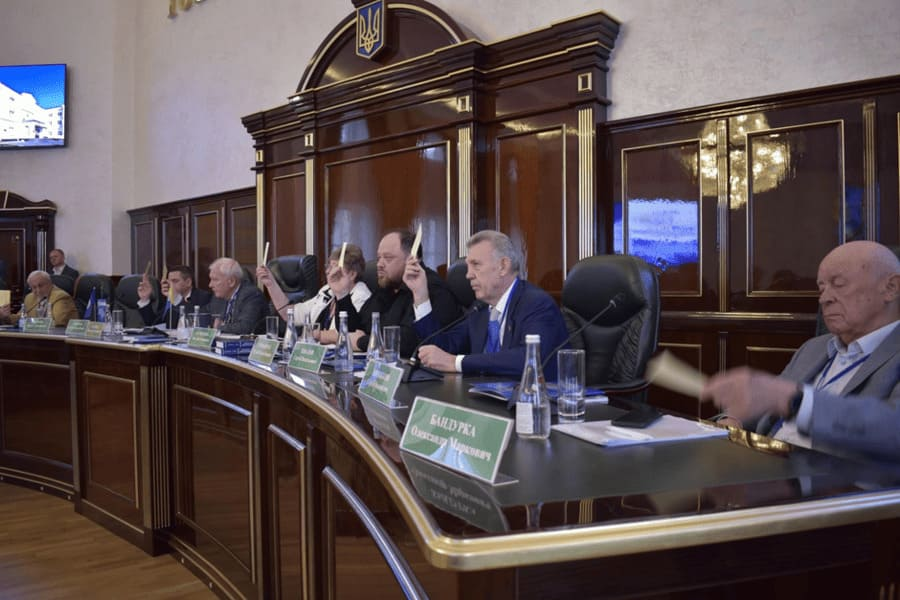

Травень 2021 року. Відкриття спортивного комплексу Київського університету інтелектуальної власності та права. На відкритті присутні Міністр освіти і науки України та народні депутати України

2023 рік. Посвята в студенти Київського університету інтелектуальної власності та права

2023 рік. У стінах КУІВП проходить засідання Загальних Зборів Національної академії правових наук України. У засіданні взяли участь найвідоміші вчені країни, а також Голова Верховної Ради України

2023 рік. Колектив КУІВП встановив національний рекорд у номінації «Найбільша мапа України з маскувальної сітки»